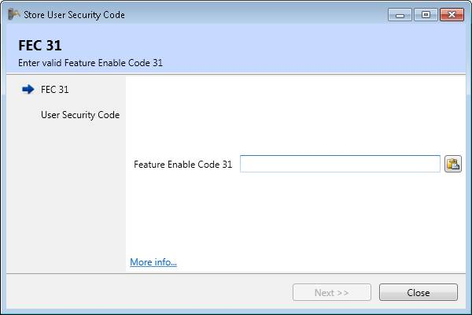

When User Security Code feature is enabled on the Motion Coordinator, users can set a custom security code, that is stored on the Motion Coordinator. This security code takes place together with the project key, when loading an encrypted project, in order to decrypt the project on the Motion Coordinator.
The validation keys generation process involves 2 stages as follows:
Since storing a user security code is a controller soft feature, a corresponding feature enable code must be specified. It is validated once the store operation is initiated. Invalid feature codes lock the controller and it has to be cycle powered.

A custom user security code has to be entered in the text box. A Paste button is provided for convenience. Security code is stored by pressing the “Store” button.